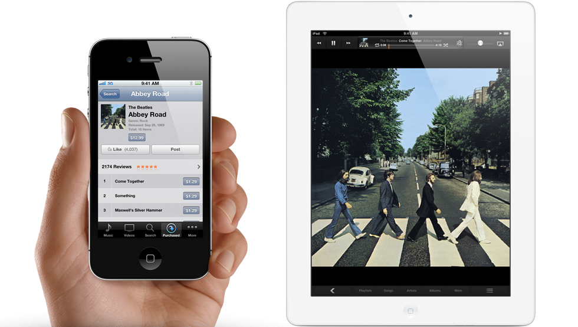

You never know when you’ll suddenly be in the mood to listen to a favorite song, rewatch a classic movie, or share that hilarious sitcom episode with a friend. With iCloud, you can have iTunes automatically download new music purchases to all your devices the moment you tap Buy. You can also access past music, movie, and TV show purchases from any of your devices — wirelessly and without syncing.
 Learn more about the iTunes app